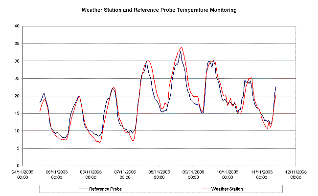
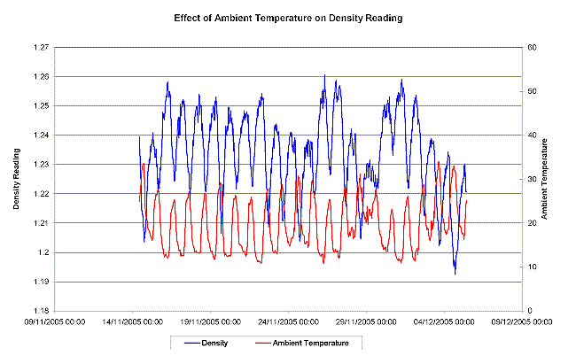
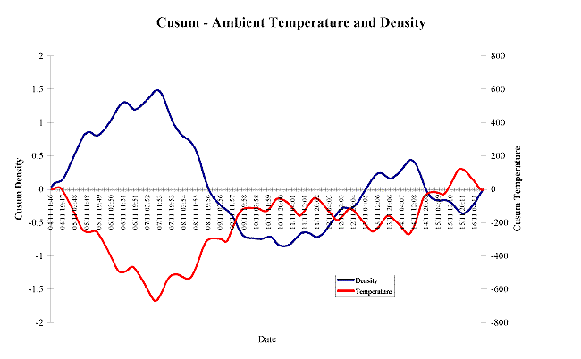
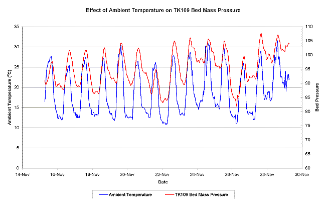
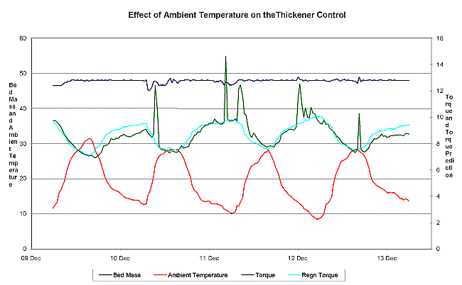
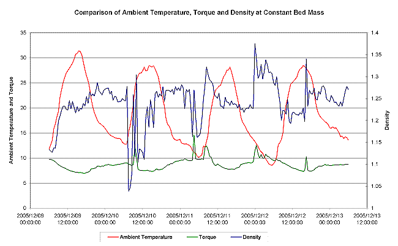

|
| [Home] [About us] [Contact us] [Training] [Optimisation services] [Protuner] |
| [Loop signatures] [Case histories] [Continuous loop performance monitoring] |
|
Control Loop Case History 88 INSTRUMENT ACCURACY DRIFT PROBLEMS WITH AMBIENT TEMPERATURE CHANGES Eero Hakkinen, at Skorpion Zinc mine, which is situated in a hot, dry, and dusty desert region in Namibia recently contacted me about a problem that they have become aware of, which was that many of their instrumentation measurements were being affected by changes in ambient temperature. He sent me a report (see below), of their findings, and wanted to know if I had previously come across this type of problem before. Measurement drift in instrumentation is not new. In general, drift is mainly due to two factors, viz. changes with temperature and changes with time. The latter used to be a major problem in earlier times, particularly with early AC magnetic flow meters, which used electrometer valves for high impedance input to the amplifiers. These units could have a zero drift of several percent in a single day, and it was common for instrument mechanicians to have to recalibrate them at the beginning of each shift. However with the advent of modern electronics and particularly with "smart" instrumentation, drift with time is generally not a problem, and manufacturers generally specify it over a year or more. Drift with temperature change has always been a problem, and may be worse in some types of instruments than others. In particular, thermocouple temperature transmitters' accuracies are entirely dependent on a very stable reference junction temperature compensation set-up, and I have been aware of many problems with these on certain makes of equipment over the years. Manufacturers generally quote accuracy figures at a certain ambient temperature (typically 20°C) and then specify an accuracy drift figure with temperature changes. About 15 years ago, one of South Africa's large petro-chemical refineries had so much trouble with measurements drifting with ambient temperature changes that they instituted a special laboratory to test all measuring instruments as to drift with temperature. I remember in particular that they told me that out of about 15 makes of two-wire thermocouple temperature transmitters they tested, only that about one third of them were found to actually comply with their own manufacturers' temperature drift specifications. There were also problems with many other types of measuring instruments, but I cannot remember all the details. I just wish I had a copy of their reports. We have major problems in certain regions Southern Africa with ambient temperature variations, particularly with day/night changes. In many overseas countries they have big summer/winter variations, but not so bad day/night changes as we do. I remember Eskom once published an article saying that Matimba Power Station suffered some of the worse day/night changes of any power station in the world. Now conditions in a desert in Namibia can fluctuate dramatically with day/night, and summer/winter ambient changes. In the report it shows that on some days the temperature can vary by as much as 20°C between day and night. So if the instrumentation does not have good ambient fluctuation temperature specifications, and can meet those specifications, then the mine has a serious problem for important measurements; and generally accurate density and flow measurements are critical for good mining processing. Apparently the mine has not as yet had positive solutions from the suppliers of the instrumentation they are having the problems with, and I suggested that we publish their report in South African Instrumentation and Control, and ask for feedback from "anyone out there" who may have experiences similar problems, and if they have managed to find any solutions. I would therefore ask those people, or anyone who would like to comment on this matter to email them to me at michael.brown@pixie.co.za. Also if you do not have any objections I would like to publish these replies. However if you prefer I don't, then please let me know, and I will only pass them back to the mine.
Report on The Effect of Climatic Conditions on the Accuracy of the Process Instrumentation at a Mine in a Desert in Namibia By Eero Hakkinen, Process Control Manager, Skorpion Mine, Namzinc 1. Introduction The effect of ambient temperature on instrumentation accuracy, especially density measurement was investigated with the supplier for the last six months. Originally the supplier rejected the reports received from us, which indicated that the huge swing in day-night temperatures is affecting the accuracy of the density gauge readings. Further tests were conducted on-site to determine the effect of density calibration errors in a 24-hour period. These highlighted that the error increased positively at night and negatively during the daytime. 2. Further Investigation To measure ambient temperature was originally problematic as one of the temperature probes of an off-line leach or neutralization tank was used. The effect on the density reading error caused by ambient temperature was noticeable but not very convincing as the probe was not in direct sunlight. An alternative temperature indicator was found and compared with the weather station data at the main office complex to determine the reliability of the measurement (Figure 1).  Figure 1 – Ambient Temperature Monitoring A meeting was held with the supplier in November at which time it was also decided to monitor a density gauge in the field that had a calibration plate inserted and should produce a relatively consistent reading. The data from both the temperature probe and density gauge were trended and it immediately became evident that the reading was inversely tracking ambient temperature (Figure 2). The density gauge was covered to block out direct sunlight but had very little effect. This data was sent to the supplier to examine and to come back with proposals on how we can rectify the problem.  Figure 2 – Effect of Ambient Temperature on Density The density and temperature data was monitored in a Cusum graph and it became apparent that the relationship to ambient temperature is not linear (Figure 3). Further examination of the recorder data and weather station data indicated that it is not just ambient temperature but possibly the effect of direct sunlight, wind chill factor and heat transfer that affects the density reading. In addition to the effect of ambient temperature on density, the effect on other field instrumentation was investigated. The reason for the poor bed mass control of the limestone thickener became evident when the bed mass pressure indicator reading was trended with ambient temperature (Figure 4). The pressure data shows a very good correlation with ambient temperature and is thought to be the main reason for the poor controller performance.  Figure 3 – Cusum graph of Ambient Temperature and Density  Figure 4 – Effect of Ambient Temperature on Bed Pressure Reading A varying bed mass indication, if real will eventually affect thickener torque, as the pressure is a function of solids loading. This relationship was studied by examining a thickener control, which runs mostly in automatic at a fixed bed mass set point. The examination identified that torque changes with constant bed mass control and that it follows the ambient temperature variation during day and nighttime. The predicted torque for a given ambient temperature and bed mass value was regressed to come up with an algorithm which could be used to determine the effect of these two variables on the thickener torque (Figure 5).  Figure 5 – Effect of Ambient Temperature on Torque at Constant Bed Mass Control The underflow density, which is affected by temperature as previously determined, was examined to see if it follows the same inverse relationship with ambient temperature. It is uncertain from the data examined if the density is directly influenced by ambient temperature or due to a higher solids loading in the thickener caused by an incorrect bed pressure reading (Figure 6).  Figure 6 – Effect of Ambient Temperature on Torque and Density at Constant Bed Mass Control 3. Conclusion
4. Recommendations
Michael
Brown is a specialist in control loop optimisation, with many years of
experience in process control instrumentation. His main activities are
consulting, and teaching practical control loop analysis and
optimisation. He gives training courses which can be held in clients'
plants, where students can have the added benefit of practising on live
loops. His work takes him to plants all over South Africa, and also to
other countries. He can be contacted at: |